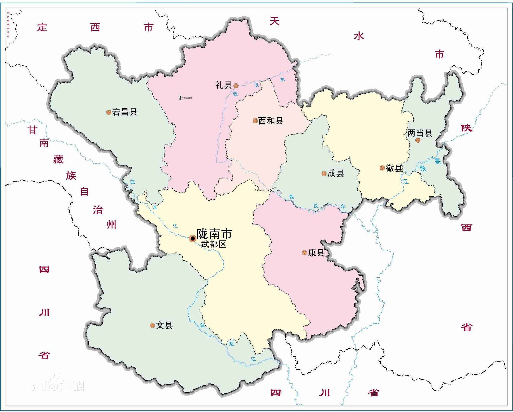

根据武都龙沟发现的“武都森林古猿（Dryopithecus wuduensis）”化石研究报告证明，早在1000万年前，陇南已是古猿生活的重要地区。 [20]
在西和县长道镇宁家庄新石器早期文化遗址，证明陇南人类生活的最早年代可上溯到7000多年前。距今5000—6000年的仰韶文化遗址，在西汉水流域、白龙江流域各地普遍存在，如礼县高寺头遗址、武都安坪遗址等。 [21]
先秦时期今陇南境内为氐人、羌人和秦人所居。陇南是秦人的发祥地，又是我国古代西部民族氐人和羌人活动的核心地区。 [16] 在礼县大堡子山发现的秦西垂陵园，证明礼县是秦人发祥地“西犬丘”所在地，秦庄公、秦文公、秦襄公等在礼县红河一带建国立郡。 [14]
秦昭王二十八年（前279年）在今西和县洛峪建立了陇南第一个行政建制武都道。后又在境内建立西县（治今礼县境）、下辨道（治今成县广化）、故道（治今两当杨店）和羌道（治今宕昌县）等县级政权建制，属陇西郡辖。今文县境属广汉郡平道，今康县境属蜀郡葭萌县。 [20] [22-26] [25] [27] [28]
《西狭颂》拓片
《西狭颂》拓片
汉武帝元鼎六年（前111年）置武都郡（郡治今西和县洛峪镇）， [29] 属益州刺史部，今陇南境大部属武都郡；今西和县北部、礼县北部为西县，属陇西郡；今文县为阴平道，属广汉郡。至东汉年间，武都郡改属凉州刺史部， [30] 郡治先后移下辨、青泥河谷地， [20] 建安二十四年（219年）曹操失守汉中，迁郡治至扶风郡小槐里； [31-32] 今西和县北部、礼县北部仍置西县，属汉阳郡；今文县境为蜀国都尉治，后曹操改广汉属国为阴平郡。 [28]
三国时今陇南境为魏蜀交界地带，蜀汉丞相诸葛亮在此“六出祁山”。魏文帝黄初元年（220年）武都郡属秦州辖。蜀汉建兴七年（229年）陈式收复武都、阴平二郡，武都治复置下辨。 [33] 公元263年10月，魏将邓艾率兵南下。经武都，出阴平，用奇兵陷成都，导致了蜀汉政权的覆灭。 [21] [32]
氐族后裔白马人
氐族后裔白马人
西晋时今陇南境大部属武都郡，今陇南境北端属天水郡。东晋至南北朝时期陇南境内先后建立仇池国、宕昌国、武都国、武兴国、阴平国五个胡人政权，称为“陇南五国”。 [30] 南北朝时区划变革频繁，地方行政机构比较混乱，今陇南境先后由南朝宋、北魏、西魏、北周统治。北魏太平真君年间武都郡治移至石门（今武都区境内），从此武都郡治始由西汉水流域南移白龙江流域， [20] [34] 正始元年（504年）北魏置南秦州于洛峪（今西和县洛峪镇），西魏时改称成州。 [24] 北周年间，今陇南境内置有武州（今武都区）、文州（今文县）、康州（后废，今成县、康县）、 [35] 成州（今西和县南部）、宕州（今宕昌县）、凤州的广化县（今徽县）、两当县（今两当县）和秦州长道县（今西和县北部、礼县北部）